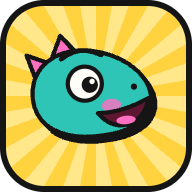
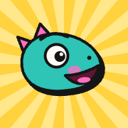

Wir hören nichts mehr vom Server.Deine letzte Nachricht ist gespeichert und geht raus, sobald es wieder klappt. Wir versuchen es weiter.Seite neu ladenNächster Versuch in 8 s
Gleich geht’s weiter, oder?wartet auf Verbindung
Wann zocken wir?
Danke fürs Abstimmen! Sollen wir Bescheid sagen?
{{ w }}
Nichts, solange du die Session offen hast. Abstellen geht jederzeit im Profil.Ja, gernLieber nicht
Browser-Dialog (nicht von uns gestaltet)compies.app möchte Benachrichtigungen anzeigen
BlockierenZulassen
{{ pushToastTxt }}
Deine Sessions

COMPIES als App installierenEigenes Fenster, Icon auf dem {{ pwaWhere }} und Push auch bei geschlossenem Browser.
SpäterInstallieren
Installiert. Ab jetzt wohnt Compibert auf deinem {{ pwaWhere }}.

Auf den Home-Bildschirm
{{ s.i }}{{ s.t }}
Auf iPhone und iPad geht Push nur mit installierter App.